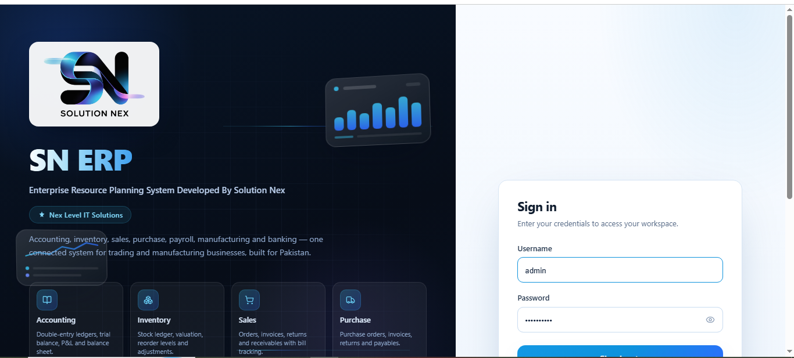
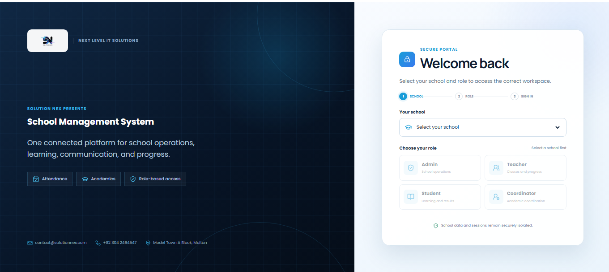
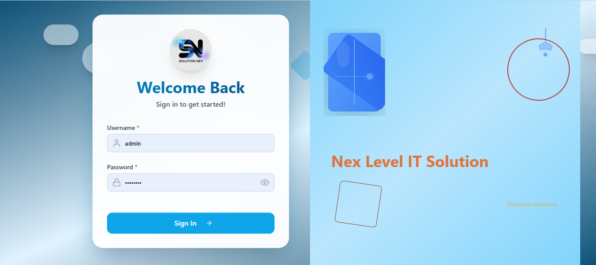
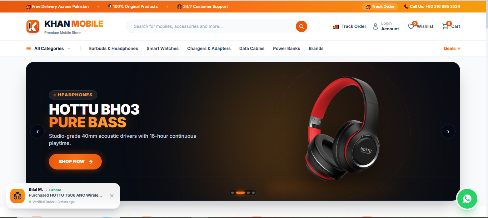
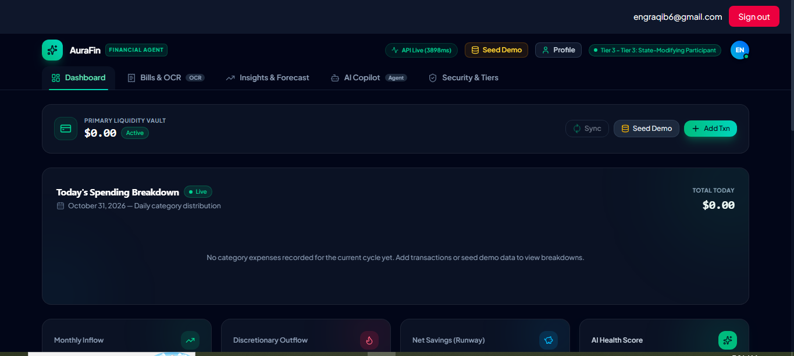
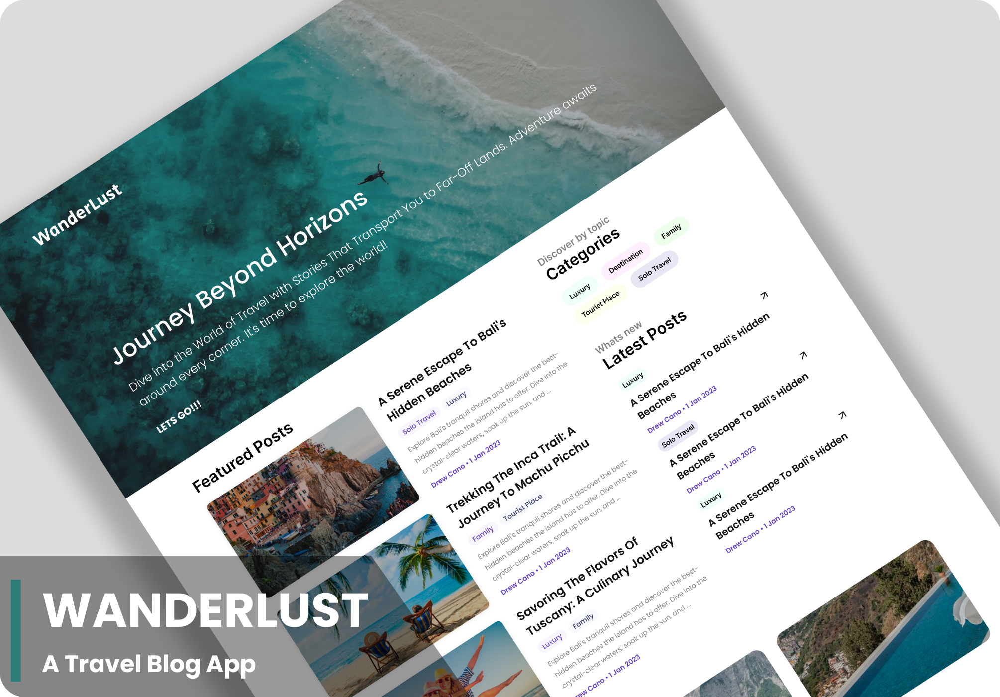

A / 01
Cloud platforms
AWS EC2, S3, CloudFront, IAM and Amplify fundamentals.
COMPUTER ENGINEERING · CLOUD · DEVOPS
I'm Aqib Hussain — an engineering student learning to design, deploy and improve the systems behind modern applications.
Hidden in this site: a working terminal with 4 secrets. Can you find them all? Try it ↓I like understanding how things work — then getting hands-on and making them work.
I'm pursuing Computer Engineering at Bahauddin Zakariya University. My current focus is cloud infrastructure, Linux, containers and automation: the building blocks that help applications move from a local environment into the real world.
Alongside my own learning, I enjoy helping other students explore technology and grow through community-led activities.
Tools and technologies I'm learning and applying through hands-on practice. I value solid fundamentals over inflated skill claims.
AWS EC2, S3, CloudFront, IAM and Amplify fundamentals.
Linux, Ubuntu, Bash, command-line workflows and networking basics.
Packaging applications and exploring orchestration with Docker and Kubernetes.
Version control and workflow automation with GitHub Actions and Jenkins.
Reverse proxy concepts, web serving and infrastructure as code fundamentals.
This workbench reflects my current learning areas — not formal certification levels or measured proficiency scores.
A selection of business applications, software projects and technical experiments I've worked on.

An ERP application developed and deployed through SolutionNex to support business operations and management.

A deployed school management application designed to support the day-to-day administration of an educational institution.

A business management application developed and deployed through SolutionNex.

A deployed web project built for Khan Mobile Shop. Explore the live application to see the implementation.

A personal finance platform focused on helping users manage financial information and understand their spending.

Deployed a travel web application in a local Minikube environment using Docker images and Kubernetes manifests.
Supporting student cloud learning, technical activities and peer collaboration through the AWS student community.
Helping learners explore Linux, Git, Bash, cloud fundamentals, DevOps and AWS through community learning.
Recognized as part of the winning team in an AWS GameDay challenge.
Building foundations in computer systems, software and engineering problem-solving.
Curious about what I'm working on? Ask the portfolio directly.
AQIB BUILDER LAB / BOOT OK
Welcome, builder. Type help to explore this portfolio.
Hint: 4 secrets are hidden here (counter, top right). Start with secret, then explore with ls -a. Up/Down = history, Tab = autocomplete.
A static site on purpose: fewer moving parts, faster loads, nothing to patch. Every push to GitHub redeploys it automatically.
Want to watch it happen? Type deploy in the terminal above.
CONTACT
I'm open to connecting with builders, students and teams working on cloud, DevOps and practical engineering.